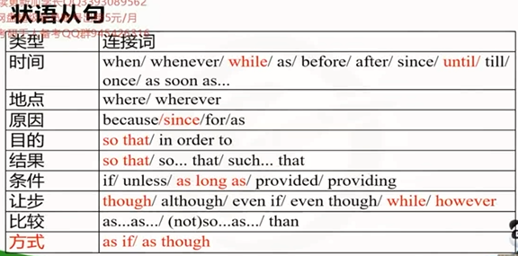
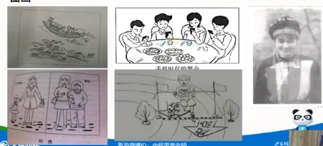

time: 00:05:00
10.核心篇: 修饰性从句分析
定语从句: 限定性(that) & 非限定性(wh-, as)
time:00:14:05
1.___ is known to everybody, H.K. belongs to China.
A.It B.As C.That D.What
=> It is known to everybody 没说完, It引导形式主语, 要+ that引导的主语从句. 或 It is known that ...
=> 众所周知As: 正如
2.I shall never forget the day ___ you went away, ___ has a great effect on my life.
A. when, which B. that, which C. which, that D. when, that
=> 第2个空前方有',' 应该填入非限定词, 所以排除that, 排除C,D
=> you went away, 主谓结构. that是关系代词, 指代名词, 做名词充当的成分(主,宾,表), 而这个句子不缺东西, 所以不能用that
去掉that: the day ___ you went away, 句子也完整
the day when you went away: when引导定语从句, 作时间状语, 选A
3.There are several research centers in China ___ a certain disease called Bird Flu is studied.
A. which B. where C. when D. what
several /ˈsevrəl/ adj. 几个的；各自的 pron. 几个；数个
certain /ˈsɜːtn/ adj. 某一；必然的；确信；无疑的；有把握的 pron. 某些；某几个
disease /dɪˈziːz/ n. 病，[医] 疾病；弊病 vt. 传染；使…有病
Flu n. 流感
Bird Flu n. 禽流感
studied /ˈstʌdid/ v. 学习；研究；求学（study 的过去式及过去分词） adj. 深思熟虑的；博学的
=> in China ___ a certain disease called Bird Flu is studied.
括号后半句是完整的主谓结构, 排除which(关系代词), 排除what(后方不是定语从句)
B.where修饰地点, C.when修饰时间, 所以选where
4.The humans are destroying nature day by day, ___ will cause severe punishment from it.
A.who B.when C.on which D.which
human /ˈhjuːmən/ adj. 人的；人类的 n. 人；人类
day by day 一天天；逐日
cause /kɔːz/ n. 原因；事业；目标 vt. 引起；使遭受
severe /sɪˈvɪə(r)/ adj. 严峻的；严厉的；剧烈的；苛刻的
punishment /ˈpʌnɪʃmənt/ n. 惩罚；严厉对待，虐待
=> 空格前方是',' 非限定, 也就是说不是一定要修饰某个词
=> 人类一天天的破坏自然, 会导致自然严峻的报复.
=> 后半句是对前半句一整句的修饰, 所以用which
=> on which = when
5.The professor showed us so boring a lecture ___ no one loved.
A.that B.as C.which D.and
professor /prəˈfesə(r)/ n. 教授；教师；公开表示信仰的人
boring /ˈbɔːrɪŋ/ adj. 无聊的；令人厌烦的 n. 钻孔 v. 钻孔；使厌烦；挖空（bore的ing形式）
lecture /ˈlektʃə(r)/ n. 演讲；讲稿；教训 vt. 演讲；训诫 vi. 讲课；讲演
=> so boring特指某一个演讲, 所以选that, 后方no one loved主谓结构
=> 不能用and, 因为前方主谓宾,后方少了宾语
6.There is no such place ___ this area in all this world. //没有任何一个地方 ... 在这个世界上
A.that B.what C.which D.as
=> 如果填入that, 后方引导的从句没有谓语动词, 所以what, which也排除
=> 所以选as, such ... as //这个世界上再没有一个地方像这个区域一样
prep. 作为；以……身份；当作；像，如同；当……时
adv. 如同，像……一样
conj. 因为，由于；在......时，随着；以……的方式，像；正如；虽然，尽管
time: 00:33:45
请在下方空格处填入适当的连接词(that / who, what, where, when, whether, which)
昨夜我看了一篇报道,讲到许多人死于一场交通事故。让我惊讶
的是一些婴儿也丧命了。我不知道是否政府已经采取措施处理此
事。我认为这场事故给我们了一个教训,我们应该遵守交通规则。
I read a report last night, _1__ says _2__ a lot of people died
in a traffic accident. _3__ astonished me most is _4__ some
babies lost their lives. I don't know _5__ the government
has taken some measures to deal with it. I hold my belief _6__
the accident has taught us a lesson _7__ we should obey the
traffic rules.
=> astonished /əˈstɒnɪʃt/ adj. 吃惊的
=> measure /ˈmeʒə(r)/ n. 测量；措施；程度；尺寸 vt. 测量；估量；权衡 vi. 测量；估量
=> hold /həʊld/ vt. 持有；拥有；保存；拘留；约束或控制；召开，举行 vi. 支持；有效；持续 n. 控制；保留
=> belief /bɪˈliːf/ n. 相信，信赖；信仰；教义
I hold my belief 我坚信
=> taugh /tɔːt/ v. 教授（teach的过去分词）
=> obey /əˈbeɪ/ vt. 服从,遵守，听从；按照……行动 vi. 服从，顺从；听话
1.which 非限制性定语从句, 指前方那个报道
2.(that) says动词, 后方跟宾语从句, 陈述语句, (that)可省略
3.what what astonished me 让我惊讶的是(什么 事情让我这么惊讶)
4.that is是be动词, 后方是表语从句, 是一个陈述句, 只能that, 不能省略, 因为是表语从句
5.whether 是否
6.that belief抽象名称 + that
7.that lesson名词 + that + 完整句子. 不能用定语从句, 这是同位语从句, that修饰前方的lesson
I read a report last night, which says that a lot of people died
in a traffic accident. What astonished me most is that some
babies lost their lives. I don't know whether the government
has taken some measures to deal with it. I hold my belief that
the accident has taught us a lesson that we should obey the
traffic rules.
time: 00:42:25
判断下列从句句型(主从, 宾从, 表从, 同位语从, 定从, 状从[还没讲]) 1.0
No one is in the least interest in the marks that a little
child gets on his test; what we are interested in is
whether we can conclude that the child will do better
or worse than other children of his age at tasks which
require "general intelligence".
=> marks n.分数, 标记，记号；唛头，分数；台面标志
=> conclude /kənˈkluːd/ vt. 推断；决定，作结论；结束 vi. 推断；断定；决定
1.找出所以从句(高亮部分)
2.判断从句类型:
1.that前方是 marks, 是同位语/定语 从句.
同位语从句去掉that后亦然完整, gets是及物动词, 宾语是前方的marks, 所以是定从.
翻译的时候, 从后往前: 一个小孩在他考试中得到的分数
2.what 主从
3.whether 前方is, 表从
4.that 前方conclude是动词, 所以是宾从
5.that 状从???
6.which 前方tasks是名词, 定从或同位语从句, 去掉which后, 后方句子没主语, 句子不完整, 所以是定从
time: 00:51:19
判断下列从句句型(主从, 宾从, 表从, 同位语从, 定从, 状从[还没讲]) 2.0
that: 如果定语中, 关系代词做宾语成分, that 可省略
No one is in the least interest in the marks (that) a
little child gets on his test; what we are interested in
is whether we can conclude (from his mark on the tes)
that the child will do better or worse than other
children of his age at tasks which we think require
"general intelligence".
1.实际句子中, that省略了
2.conclude 和 that 中间加了(from his mark on the tes), 介词短语作状语, 放在that英语从句的前方, 宾语后置(避免头重脚轻)
3.which we think require..., 有think 和 require 2个动词, 因为we think后面省略了that,
time: 01:09:27
长难句实操 1.0
The American economic system is organized around //1.谓语动词, 主谓结构
a basically private-enterprise, market-oriented //, + 名词短语, 名词对前方进行解释说明(同位语)
economy where consumers largely determine what //where 引导定语从句 what: 前方determine是动词, what引导宾语从句
shall be produced by spending their money in the
marketplace for those goods and services that they //that引导定语从句
want most. (1994)
economic /ˌiːkəˈnɒmɪk/ adj. 经济的，经济上的；经济学的
organized /ˈɔːɡənaɪzd/ adj. 有组织的；安排有秩序的；做事有条理的 v. 组织（organize的过去分词）
basically /ˈbeɪsɪkli/ adv. 主要地，基本上
enterprise /ˈentəpraɪz/ n. 企业；事业；进取心；事业心
market /ˈmɑːkɪt/ n. 市场；行情；股票市场；市面；集市；销路；商店 vt. 在市场上出售 vi. 做买卖
oriented /ˈɔːrientɪd/ adj. 以……为方向的；重视……的 v. 使朝向，使面对；确定方位（orient 的过去式和过去分词）
economy /ɪˈkɒnəmi/ n. 经济；节约；理财
consumer /kənˈsjuːmə(r)/ n. 消费者；用户，顾客
largely adv. 主要的, 大部分, 大量地
determine /dɪˈtɜːmɪn/ v. （使）下决心，（使）做出决定 vt. 决定，确定；判定 vi. 确定；决定；判决, 终止，结束
spending /ˈspendɪŋ/ n. 花费；开销 v. 花费；度过（spend的现在分词形式）
marketplace /ˈmɑːkɪtpleɪs/ n. 市场；商场；市集
those /ðəʊz/ det. 那些（that 的复数） pron. 那些（that 的复数）
1.谓语动词: is organized around, 主谓结构(is organized是 be done 形式)
2.将从句分层翻译:
=>1.The American economic system is organized around a basically private-enterprise, market-oriented economy
美国金融系统 是 被组织的 围绕一个 基本上 私人企业, 市场导向 经济
美国金融系统 是 基本上 围绕一个 私企 组建的, (这种情况叫)市场导向 经济 //basically副词修饰动词organized
=>2.where consumers largely determine
(where = in which, 在...中)在这种经济中 消费者 大多数 决定了(定从)
=>3.what shall be produced by spending their money in the marketplace for those goods and services
什么 将会/应该 被生产 通过/被 花费他们的钱 在市场中 为了/对于 那些 商品和服务(宾从)
通过花他们的钱 在这个市场里 为了这些商品和服务 什么将会被生产(状语前置)
在这个市场里 为了那些产品和服务 通过花他们的钱 什么将会被生产
=>4.that they want most.
(产品和服务)他们最想要的.
=> 美国经济体 基本上 围绕着 一个私企 所组件, 这就是 市场导向经济.
在这种经济中, 消费者 绝大多数 决定了 在市场里 为了那些产品和服务 通过花钱 生产什么东西,
为了那些他们最想要的产品和服务.
time: 01:24:50
长难句实操 2.0
Social science is the branch of intellectual enquiry
which seeks to study humans and their endeavors in //which: 定从?
the same reasoned, orderly, systematic and
dispassioned manner that natural scientists use for
the study of natural phenomena.(2003)
1.谓语动词: is
2.将从句分层翻译:
老师说后期讲
time: 01:25:50
状语从句(稍微背一下)

1.时间
when 当...时候, 在...之后
whenever 无论何时，无论什么情况
until conj. 到……时，直到……为止 prep. 到……时，直到……为止
6.条件
unless conj. 除非；若非 prep. 除……之外
as long as 只要；和…一样长/一样久
provided conj. 假如，倘若
v. 提供，给予（provide 的过去式和过去分词）
providing conj. 假如，如果，以……为条件
v. 提供，供给，给予；为（可能事件）做充分准备；抚养，赡养；规定（provide 的现在分词）
7.让步
though /ðəʊ/ conj. 虽然，尽管 adv. 虽然；不过；然而
although /ɔːlˈðəʊ/ conj. 尽管，虽然；但是，然而
even if 即使；虽然
even though 虽然，即使
while conj. 在……期间；在……的过程中
n. 一段时间；（诗、文）在此期间
adv. 在……时候
v. 消磨（时间）
prep. 直到
however adv. 无论如何；不管怎样（接副词或形容词）；然而；可是
conj. 无论以何种方式; 不管怎样
8.比较
as...as... 象…一样的
9.方式状语从句/虚拟语气(过去时)
as if 犹如, 好似
as though 好像, 仿佛
if i were a boy 如果我是男生.(are->were)
time: 01:28:40
5大写作板句 —— 非限 + 非谓语 + 状从

turned a blind eye to 睁一只瞎眼睛(无视,忽视)...对于
如图所示, As非限制性定从: As is shown in the picture,
有/出现一个人/物, 做..., There be倒装, 伴随状语: there is/appears a man, doing.../done.../to do...
伴随...的神情, 介词引导伴随状语 with an expression of delight/sadness/confusion
同时另一个人/物做..., 另一个主语: 独立主格 (with) the other man/sth. doing.../dong/to do...
好像... 虚拟语气 as if sb did ...
图1: 视频13, time: 00:37:40
如图所示, (右侧)有一个人看风景, 伴随着开心的表情, 同时另外一个人丢垃圾到满是垃圾的河里, 好像他们 看不到/忽略了这些垃圾一样.
As is shown in the picture,
there is a tourist, //有一个游客
enjoying the beautiful scenery, / taking the sighseeing, //欣赏美丽的风景, / 以观光
with the expression of delight,
(with) the other traveller discarding the trash/rubbish/waste into the lake full of fish bones, cans melon, watermelon grids, packages and so on.
as if they turned a blind eye / ignored to the environment. //好像他们对于环境无视/忽视了(睁了一只瞎乐的眼睛).
图5: 视频13, time: 00:24:40
如图所示, 有一个年轻人冲向了终点, 伴随着脸上漏出了开心的笑容, 伴随着汗水浸湿了衣服, 好像他正在拥抱成功.
As is shown in the picture,
there is a young boy, / there runs a young boy, //有一个男孩, / 跑过来一个男孩
rushing to the final destination, //冲向最终的目的地，
with an expression of delight, //带着喜悦的表情，
(with) all his clothes (being) wet, //他的衣服全湿了, (独立主格)
as if he embraced hope of victory. //就像他拥抱了胜利的希望. (虚拟语句)
图3:
如图所示, 出现了一个美丽的美国女孩, 身穿这中国传统服装, 伴随着开心的表情, 同时一些装饰品被穿戴在身上, 好像她变成了一个中国女孩.
As is shown in the picture,
there appears a lovely America girl,
dressing herself in tranditional Chinese constume,
with an expression of delight,
(with) a vast array of a necklace, earrings, ribbons and other accessories/things decorated in her dress,
as if she bacame a Chinese girl.
图2:
如图所示, 有4个年轻人, 都看着手机屏幕, 伴随着脸上很 困惑/无聊 的表情, 同时菜被展示在桌子上, 好像他们变成了陌生人.
As is shown in the picture,
there are 4 youngsters / young man, //4个年轻人
playing on/with phones, //
looking at the phones,
with the expression of self-satisfaction/delight/indifference, //
(with) the delicious food (served)/being on the table,
as if they bacame strangers.
图4: 视频13, time: 00:28:15
如图所示, 这是一个妈妈, 30年前牵着女儿的手, 伴随着高兴/满意的表情, 同时现在她的女儿做同样的事, 好像他们很高兴.
As is shown in the picture,
there is a mother,
holding the little girl's hand 30 years ago, / standing beside the little girl, / leaning ...
with an expression of delight / satisfaction,
(with) her daughter doing the same thing now,
as if they were happy.